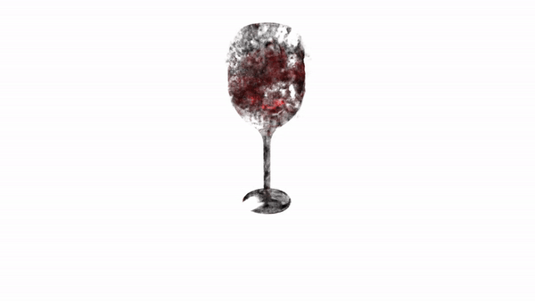
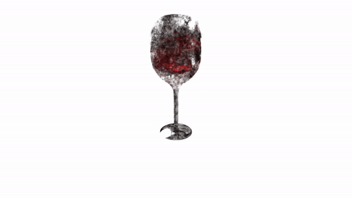

Nerfacto
TranspNeRF




Nerfacto
TranspNeRF
Transparent objects pose a significant challenge for robot manipulation due to reflection, refraction, and dispersion of light. In chemistry robotics, objects like vials and beakers are necessary to be manoeuvred to perform lab tasks by the robot autonomously. To reconstruct these objects, Neural Radiance Fields (NeRFs) have demonstrated the potential of using neural networks by casting rays to capture fine details of 3D objects. However, since rays are modelled as straight paths and transparent objects are view-dependent, NeRFs struggle to model them accurately. Current methods encounter challenges with computational intensity, speed, and framework flexibility to be used in various scenarios. To combat these gaps, this method bends rays when striking the object to mimic the behaviour of light rays. The Nerfacto method is used as a baseline for flexibility, reflected rays are calculated, and the Fresnel constant is applied to capture some refractive effect. This ray-bending method was tested on both synthetic and non-synthetic opaque and transparent object scenes. It was found that these reflected rays aid in removing noise and artefacts in the final reconstruction. As well, depth supervision with ground truth depths typically available in robotics is added for further improvement in results. This method enhanced reconstruction for transparent objects, which, in turn, aids robot grasping algorithms in detecting and manipulating these objects in lab settings.
Below are rgb, depth, and normal reconstruction results for method variations performed in the paper.


@misc{Streltsov2024,
author = {Streltsov, Nicole},
title = {Transparent Object Reconstruction For Chemistry Robotics Applications Utilizing Neural Radiance Fields},
year = {2024},
month = {April},
howpublished = {Bachelor of Applied Science in Engineering Science Thesis, University of Toronto},
}